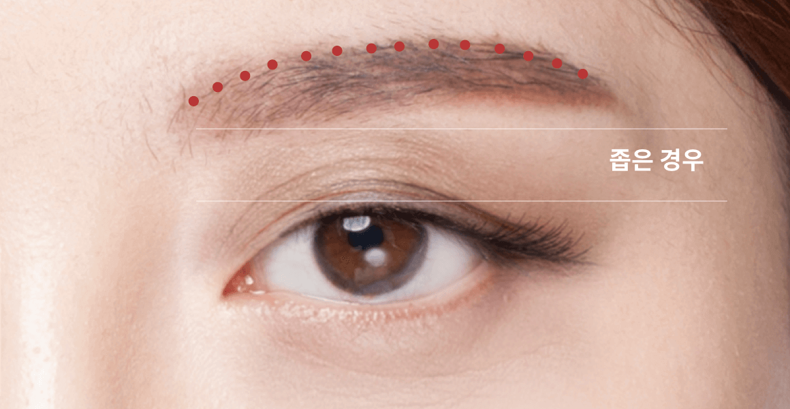
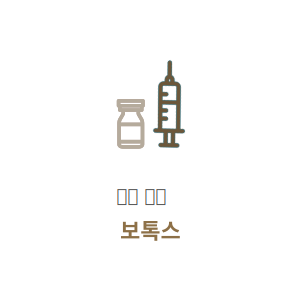

쌍커풀 없이도
자연스러운 동안눈!
#눈썹
거상술
-

수술 시간
1시간
-

마취방법
수면/국소마취
-

실밥제거
5~7일 후
-

내원치료
2~3회
-

회복기간
5~7일 후
눈썹 거상술이란?
눈썹 위 또는 아래를 절개하여 처진 피부를 당겨 주름을 개선하는 수술입니다.
상안검수술과 비슷하지만 절개 부위가 눈썹이기 때문에 피부가 두껍고 단단한 경우에도 수술이 가능하여
쌍커풀 수술 없이도 눈매를 바로 잡아주는 자연스러움으로 선호도가 높은 수술법입니다.
BEFORE

AFTER

눈썹거상술 수술 방법
-

눈과 눈썹 사이의 거리가 좁은 경우
눈썹 위 절개눈썹 위를 절개하여 처진 피부를 당겨 제거하고 교정하는 방법
-
눈과 눈썹 사이의 거리가 넓은 경우
눈썹 아래 절개눈썹 아래를 절개하여 처진 피부를 당겨 제거하고 교정하는 방법
눈썹 거상술과
상안검의
차이점
단순 하안검성형과 확장형 하안검성형의 차이점을 이해하고 전문의와의
자세한 상담과 진단을 통해 환자분에게 적합한 방법으로 수술을 진행합니다.
-
눈썹 거상술
-
눈썹 부근의 절개를 통해 처진 피부를 끌어올려 제거
-
피부가 두껍고 단단한 경우
-
눈꼬리부분이 처진 경우
-
쌍커풀을 만들지 않아도 가능
-
쌍커풀 라인의 변화 없이 개선을 원하는 경우
-
눈썹이 처진 경우
-
-
눈썹 거상술
-
처진 눈꺼풀의 불필요한 조직을 제거
-
쌍커풀 라인 개선 가능
-
눈썹 처짐 없이 눈꺼풀 처짐만 있는 경우
-
VS
함께하면좋은 시술
연세자연미성형외과는 개인의 상태에 따른 노화 증상과 원인에 맞는
여러가지 시술들을 복합적으로 진행하는 맞춤형 안티에이징 수술법으로
자연스럽게 젊어지는 아름다움을 선물해드립니다.
- 